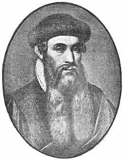
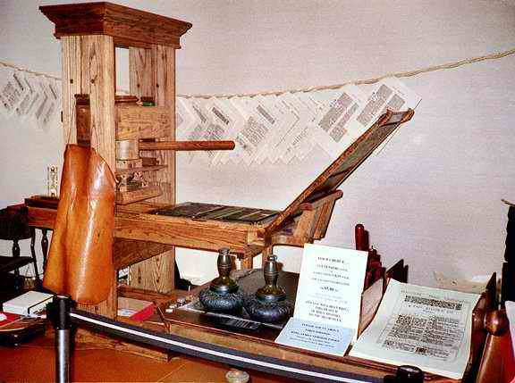
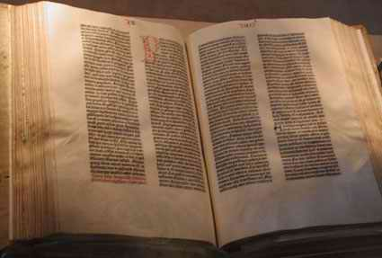

8 JOHANN GUTENBERG 1400-1468
Lazim
Johann Gutenberg dianggap penemu mesin cetak. Apa yang
sebetulnya dia lakukan adalah mengembangkan metode pertama
penggunaan huruf cetak yang bergerak dan mesin cetak dalam
bentuk begitu rupa sehingga pelbagai macam materi tulisan
dapat dicetak dengan cepat dan tepat.
Tak ada penemuan yang terlompat dari pemikiran seseorang,
tidak juga mesin cetak. Segel dan bulatan segel yang
pengerjaannya menganut prinsip serupa dengan cetak blok
sudah dikenal di Cina berabad-abad sebelum Gutenberg lahir
dan suatu bukti menunjukkan bahwa di tahun 868 M sebuah buku
cetakan sudah ditemukan orang di Cina. Proses serupa juga
sudah dikenal orang di Eropa sebelum Gutenberg. Cetak blok
memungkinkan pencetakan banyak eksemplar buku tertentu.
Proses ini punya satu kelemahan: karena satu set baru serta
komplit dari cukilan kayu atau logam harus dibuat untuk
sebuah buku, dengan sendirinya tidaklah praktis untuk
mencetak berbagai macam buku.
Sering disebut orang sumbangan terpenting Gutenberg
adalah penemuannya di bidang huruf cetak yang bisa bergerak.
Dalam perkara ini pun hal serupa sudah diketemukan di Cina
sekitar pertengahan abad ke-11 M oleh seorang bernama Pi
Sheng. Huruf-huruf cetak aslinya terbuat dari semacam tanah
yang tidak bisa tahan lama. Sementara itu beberapa orang
Cina dan Korea sudah melakukan serentetan penyempurnaan dan
berhasil baik sebelum Gutenberg. Orang-orang Korea
menggunakan huruf cetak metal, dan pemerintah Korea membantu
sebuah pabrik peleburan untuk memproduksi huruf cetak di
awal abad ke-15 M. Lepas dari semua ini, keliru juga jika
menganggap Pi Sheng seorang yang punya pengaruh spesial.
Pada tingkat pertama, Eropa tidak belajar huruf cetak
bergerak dari Cina melainkan atas kreasinya sendiri. Kedua,
mencetak dengan cara huruf cetak bergerak belum pernah
digunakan secara umum di Cina sendiri sampai baru-baru ini
saja tatkala prosedur percetakan modern mereka pelajari dari
Barat.
Ada empat komponen esensial cara percetakan modern.
Pertama, huruf cetak yang bergerak, berikut beberapa
prosedur penyetelan dan peletakan huruf-huruf yang mapan.
Kedua, mesin cetak itu sendiri. Ketiga, tinta yang serasi
untuk menghasilkan cetakan. Keempat, bahan semisal kertas
untuk mencetaknya. Kertas telah diketemukan di Cina bertahun
sebelum mesin cetak oleh Ts'ai Lun dan penggunaannya telah
tersebar luas di Eropa sebelum jaman Gutenberg. Itulah unsur
satu-satunya dari proses cetak Gutenberg yang sudah siap
jadi. Meskipun orang lain pernah melakukan macam-macam
pekerjaan terhadap tiap-tiap komponen itu, namun Gutenberg
telah berhasil melakukan macam-macam penyempurnaan.
Misalnya, dia mengembangkan metal logam campuran untuk huruf
cetak; menuangkan cairan logam untuk huruf cetak blok secara
tepat dan teliti; minyak tinta cetak serta alat penekan yang
diperlukan untuk mencetak.

Mesin Cetak Gutenberg
Tetapi, sumbangan pikiran Gutenberg secara keseluruhan
lebih besar dari siapa pun juga dalam hal penyempurnaan
mesin cetak. Arti pentingnya terutama terletak pada
keberhasilannya menggabungkan semua unsur mesin cetak
menjadi suatu sistem yang efektif dan produktif. Karena itu
mesin cetak, berbeda dengan penemuan-penemuan lain
sebelumnya, merupakan proses produksi besar-besaran yang
utama. Sepucuk bedil dengan sendirinya jauh lebih efektif
ketimbang sebuah busur dan anak panah. Sebuah buku hasil
cetakan tak banyak beda dengan sebuah buku hasil tulisan
tangan. Kelebihan mesin cetak dengan demikian terletak pada
segi produksi besar-besarannya. Apa yang telah dikembangkan
oleh Gutenberg bukanlah sebesar sebuah alat atau penemuan
akal, dan bukan sekadar serentetan penyempurnaan, melainkan
suatu proses produksi lengkap.
Perbendaharaan biografis kita mengenai diri Gutenberg
langka sekali, kita hanya tahu dia lahir di Jerman sekitar
tahun 1400 M di kota Mainz. Sumbangannya terhadap seni
cetak-mencetak terjadi pada pertengahan abad dan pekerjaan
terbagusnya --apa yang disebut Injil Gutenberg-- dicetak di
Mainz sekitar tahun 1454 M. Anehnya, nama Gutenberg tak
pernah tercantum dalam buku mana pun, tidak juga dalam Injil
Gutenberg, walaupun jelas dia sendiri yang cetak dengan alat
penemuannya.
Gutenberg tidak pernah tampak sebagai seorang usahawan;
benar-benar dia tidak punya keinginan dapat uang dari hasil
penemuannya. Dia sering terlibat dengan dakwaan pengadilan
yang mengakibatkan keharusan baginya membayar tebusan dalam
bentuk alat-alat perlengkapannya kepada temannya bernama
Johann Fust. Gutenberg wafat tahun 1468 di kota Mainz.

Satu halaman dari kitab Injil Gutenberg yang asli
Salah satu pengaruh Gutenberg dalam sejarah dunia dapat
mendatangkan keuntungan jika kita hubungkan dengan
perkembangan di Cina dan Eropa di masa-masa berikutnya. Pada
saat Gutenberg lahir, kedua daerah itu hampir sama majunya.
Tetapi sesudah Gutenberg menemukan mesin cetak Eropa melesat
maju dengan cepatnya, sedangkan Cina --yang masih
menggunakan cetak blok-- perkembangannya agak lambat.
Mungkin berlebihan jika kita bilang perkembangan percetakan
satu-satunya faktor yang jadi penyebab perbedaan tingkat
kemajuan, tetapi penemuan itu jelas punya arti penting yang
tidak bisa disingkirkan.
Juga penting dicatat jika hanya tiga orang dalam daftar
buku ini hidup di masa lima abad sebelum Gutenberg sedangkan
enam puluh tujuh hidup di masa lima abad sesudah wafatnya
Gutenberg. Ini menunjukkan betapa penemuan Gutenberg amat
berarti --bahkan bisa disebut suatu penemuan penting-- dalam
kaitan penarikan pelatuk revolusi kemajuan jaman modern.
Alexander Graham Bell bahkan boleh saja tidak lahir ke
dunia tetapi telepon tetap diketemukan pada saat yang sama
dalam sejarah. Begitu juga bisa diambil contoh
penemuan-penemuan lain, tanpa Gutenberg, penemuan alat cetak
modern akan tertunda beberapa generasi, dan diukur dari
hebatnya pengaruh yang ditimbulkannya, tak salah lagi
Gutenberg dapat kehormatan tercantum dalam daftar urutan
buku ini.
|